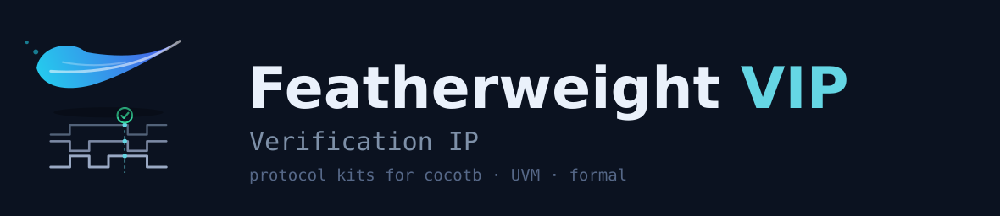

Lightweight protocol Verification IP for cocotb, UVM, and formal. One synthesizable transactor, every platform — with protocol checkers and coverage included.
Why Featherweight VIP
It's a kit you import, not a methodology you adopt. Your simulator, cocotb environment, and UVM flow stay exactly where they are.
Low lift
Drop a kit into the platform you already use. No new tool, no new flow, no language to learn.
One transactor, every platform
A synthesizable FIFO ⟷ protocol transactor drives cocotb (signals), UVM (classes), and formal (conversion + checks) from a single core.
Checkers included
Protocol assertions authored as SVA and synthesizable Verilog — so the same checks run in simulation and in formal (SymbiYosys), behind an ENABLED flag.
● Coverage you can close
Every kit ships a protocol coverage model — SystemVerilog covergroups today, portable coverage planned — so "did we exercise the protocol?" has a measurable answer.
Protocols & platforms
Each kit provides Initiator, Target, and Monitor roles. The matrix below is the project status board — every kit targets all four platforms, and every kit includes a coverage model.
| Protocol | UVM | Formal | cocotb | PSS | Coverage |
|---|---|---|---|---|---|
| Wishbone | ✅ | ✅ | 🚧 | ⬜ | covergroups |
| SPI | ✅ | 🚧 | 🚧 | ⬜ | covergroups |
| AXI4-Lite | 🚧 | 🚧 | ⬜ | ⬜ | planned |
| AXI4 | ⬜ | ⬜ | ⬜ | ⬜ | planned |
| AHB | ⬜ | ⬜ | ⬜ | ⬜ | planned |
| APB | ⬜ | ⬜ | ⬜ | ⬜ | planned |
✅ available · 🚧 in progress · ⬜ planned — each protocol's docs live in its own fwvip-<proto> repo (linked above); request a new one via a GitHub issue.
What's in a kit
Three roles — Initiator, Target, Monitor — and for each, a stack from synthesizable core up to a class-based UVM agent.
The same core feeds cocotb (drive the FIFO signals), UVM (the class agent), and formal (the transactor as a protocol converter + checker).
Collecting protocol coverage
Coverage isn't an add-on — it ships with every kit. The questions a coverage model answers: which transfer types, sizes, and response codes were seen? Which handshake corners (back-pressure, wait states, retries, errors) actually occurred?
● SystemVerilog covergroups
Each kit's Monitor samples a protocol covergroup: transfer kind, address/data widths in use, burst/wait/retry/error events, and cross-coverage of the interesting corners. Available today.
● Portable coverage (planned)
A Zuspec/PSS coverage layer is planned so the same coverage intent travels across simulation, formal, and emulation — one model, every engine.
Enable coverage on the monitor agent (UVM)
// the Monitor agent samples the protocol covergroup automatically
fwvip_wb_mon_cfg cfg = fwvip_wb_mon_cfg::type_id::create("cfg");
cfg.coverage_enable = 1'b1; // collect protocol coverage
cfg.checks_enable = 1'b1; // run protocol checkers alongside
uvm_config_db#(fwvip_wb_mon_cfg)::set(this, "env.mon_agent", "cfg", cfg);It's still just your testbench
The same kit, two platforms. Pull in the core, point it at your DUT's signals, and go.
cocotb — drive the transactor's FIFOs
from fwvip_wb import WishboneInitiator
wb = WishboneInitiator(dut, clk=dut.clk)
await wb.write(addr=0x40, data=0xDEAD_BEEF)
val = await wb.read(addr=0x40)
# checkers + coverage run on the monitorUVM — the class-based agent
fwvip_wb_init_agent m_init;
fwvip_wb_mon_agent m_mon;
// in build_phase
m_init = fwvip_wb_init_agent::type_id::create("m_init", this);
m_mon = fwvip_wb_mon_agent ::type_id::create("m_mon", this);
// drive via fwvip_wb_write_seq / fwvip_wb_read_seq